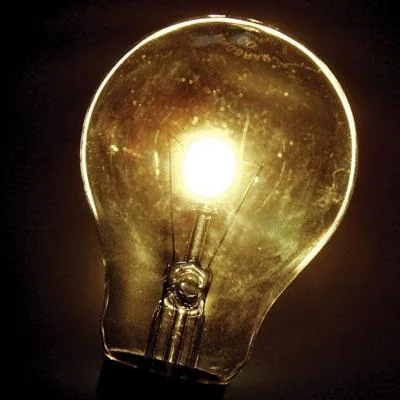

Blog · May 20, 2010
Natural Capital Complexities



The caliber of my choices plays in incredible role on what future choices I will get to make. I am compelled to share some details on what I do. What is is to proceed with conviction?
“Develop an integrated, dynamic model of ecological and economic systems to more comprehensively evaluate ecosystem services and their value. ” – A
“Scientific understanding of ecosystem production functions is improving rapidly but remains a limiting factor in incorporating natural capital into decisions, via systems of national accounting and other mechanisms.” – B
“Indicators are tools for measuring and communicating progress. They provide evidence of the magnitude, distribution, pace and direction of change in defined parameters.” – C
“Biodiversity and ecosystem service indicators are needed at various scales for various uses.” – D
“performance has been undermined” by “poor cross-sector collaboration”, among a range of other improvable malfunctions. –E
Would you pay for something “valuable” if it was hidden behind a curtain? What if it was in plain sight? Science helps bring reality into focus and leads people to make their own wonders of the world from hazy details that new discoveries often illuminate.
Learning alongside surprise creates wonder.
Wonder spreads curiosity and curiosity fuels innovation. Thus the advancements of science coupled with innovative new applications represent a system of future technology.
Scientific advances are made possible in part by contributions of capital. The goal of science is to create knowledge and understanding; the goal of investment is to create a return. How can these be aligned? Apart from grants serving the needs of initiative or policy development, environmental investors seek new “green tech”. What if the tech is an understanding of a system, rather than a thing itself? What if, to use the words of Stephen Wolfram, a new kind of science looms over the horizon that integrates the fundamental concepts of a broad array of natural sciences?
What do you make of it, Watson?
First published on my old blog, amyrobinson.wordpress.com, May 20, 2010.